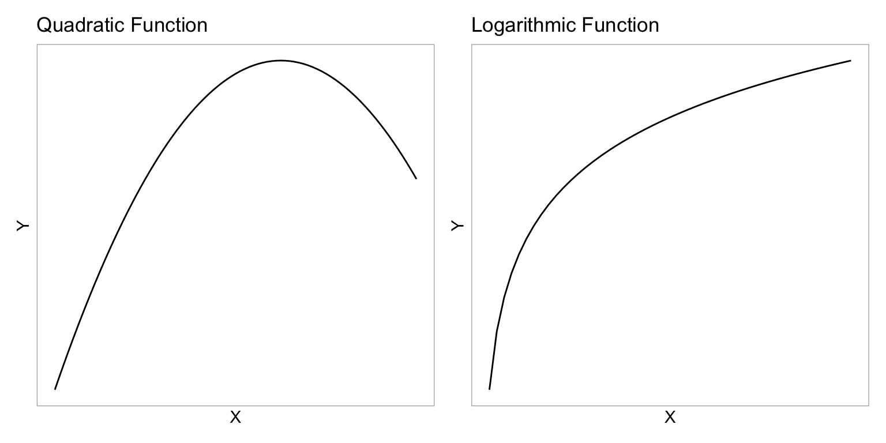
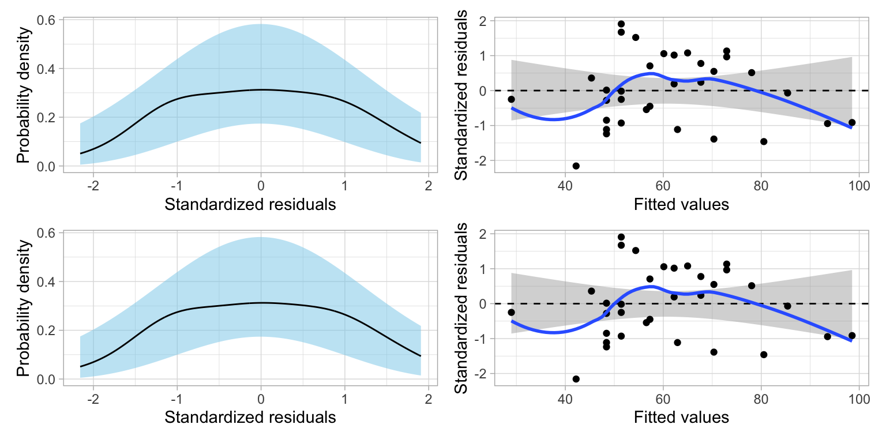
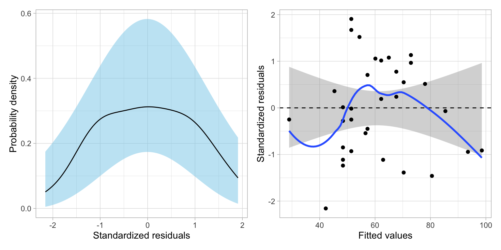
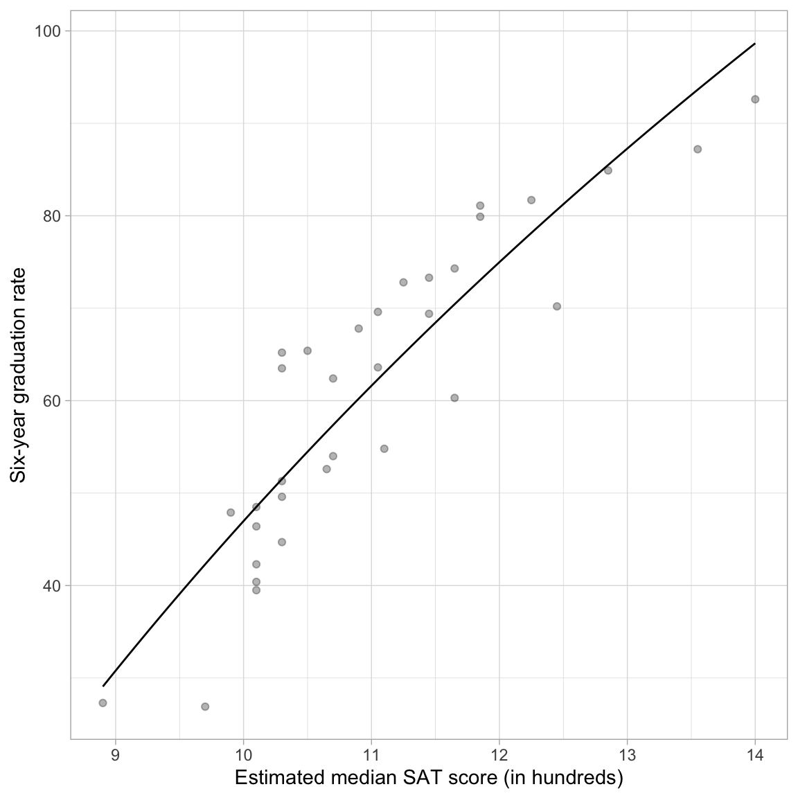
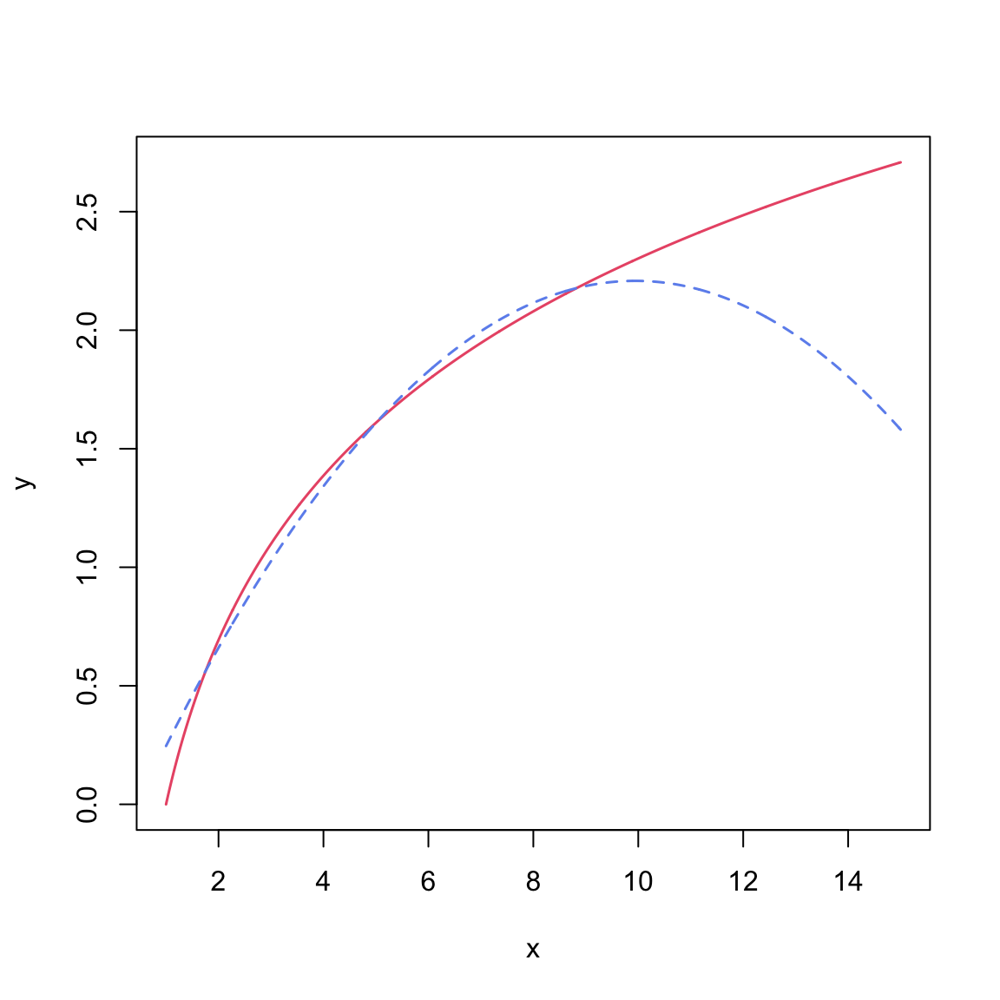
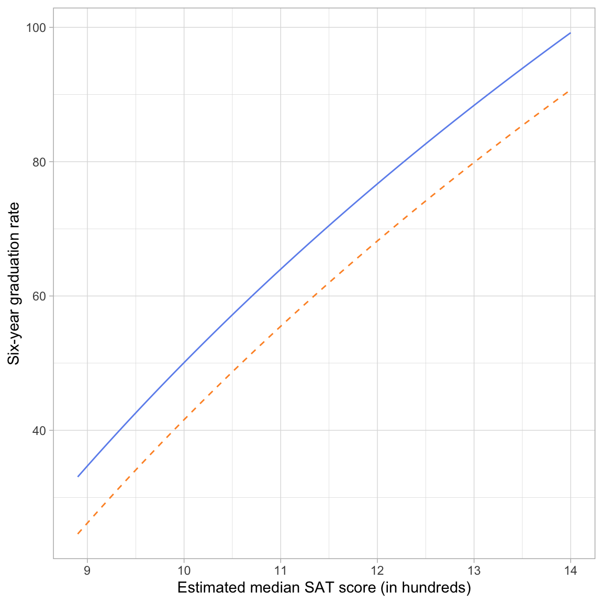

In this chapter, you will learn another method of dealing with nonlinearity. Specifically, we will look at log-transforming the predictor in a linear model. To do so, we will use the mn-schools.csv dataset. See data codbook for additional information.
Our goal will be to re-visit if (and how) academic “quality” of the student-body (measured by SAT score) is related to institutional graduation rate. Within this work, we will use information theoretic approcaches (namely the AICc and related measures) to evaluate any fitted models.
# Load librarieslibrary(AICcmodavg)library(broom)library(educate)library(gt)library(patchwork)library(tidyverse)# Read in datamn =read_csv(file ="https://raw.githubusercontent.com/zief0002/fluffy-ants/main/data/mn-schools.csv")# View datamn
# A tibble: 33 × 6
id name grad public sat tuition
<dbl> <chr> <dbl> <dbl> <dbl> <dbl>
1 1 Augsburg College 65.2 0 10.3 39.3
2 3 Bethany Lutheran College 52.6 0 10.6 30.5
3 4 Bethel University, Saint Paul, MN 73.3 0 11.4 39.4
4 5 Carleton College 92.6 0 14 54.3
5 6 College of Saint Benedict 81.1 0 11.8 43.2
6 7 Concordia College at Moorhead 69.4 0 11.4 36.6
7 8 Concordia University-Saint Paul 47.9 0 9.9 37.8
8 9 Crossroads College 26.9 0 9.7 25.3
9 10 Crown College 51.3 0 10.3 33.2
10 11 Gustavus Adolphus College 81.7 0 12.2 43.8
# ℹ 23 more rows
10.1 Relationship between Graduation Rate and SAT Scores
In a previous set of notes, we determined that the relationship between SAT scores and graduation rates was curvilinear. We initially saw evidence of this curvilinearity in the scatterplot of graduation rates versus median SAT scores. After fitting a model assuming a linear relationship (syntax not shown), the plot of the standardized residuals versus the fitted values also suggests that the linearity assumption is not tenable.
Code
# Scatterplotp1 =ggplot(data = mn, aes(x = sat, y = grad)) +geom_point() +geom_smooth(method ="loess", se =FALSE) +theme_light() +xlab("Estimated median SAT score (in hundreds)") +ylab("Six-year graduation rate")# Fit linear modellm.1=lm(grad ~1+ sat, data = mn)# Check linearity assumptionsp2 =residual_plots(lm.1, type ="s") # Layout plotp1 | p2
Figure 10.1: LEFT: Six-year graduation rate as a function of median SAT score. The loess smoother (blue line) is also displayed. RIGHT: Scatterplot of the standardized residuals versus the fitted values for a model using median SAT scores to predict variation in six-year graduation rates. The reference line of Y=0 is also displayed along with the 95% confidence envelope (grey shaded area). The loess smoother (solid, blue line) shows the empirical relationship betwen the residuals and fitted values.
10.1.1 Logarithmic Function: Yet Another Non-Linear Function
One way to model this non-linearity is to fit a model that included a quadratic polynomial effect. Remember that the quadratic function is ‘U’-shaped. In our example, the quadratic term was negative, which creates an upside-down ‘U’-shape. This negative quadratic function is shown in the left-had side of the figure below.
We do not have to use a quadratic function to model curvilinear relationships. We can use any mathematical function that mimics the curvilinear pattern observed in the data.1 One mathematical function that is useful for modeling curvilinearity is the logarithmic function. The logarithmic function is shown in the right-hand side of the figure below.
Code
fig_01 =data.frame(x =seq(from =-5, to =3, by =0.1) ) |>mutate(y =-(x^2))p1 =ggplot(data = fig_01, aes(x = x, y = y)) +geom_line() +theme_light() +scale_x_continuous(name ="X", breaks =NULL) +scale_y_continuous(name ="Y", breaks =NULL) +ggtitle("Quadratic Function")fig_02 =data.frame(x =seq(from =0.1, to =5, by =0.1) ) |>mutate(y =log2(x))p2 =ggplot(data = fig_02, aes(x = x, y = y)) +geom_line() +theme_light() +scale_x_continuous(name ="X", breaks =NULL) +scale_y_continuous(name ="Y", breaks =NULL) +ggtitle("Logarithmic Function")# Layout the plotsp1 | p2

Figure 10.2: LEFT: Negative quadratic function of X. RIGHT: Logarithmic function of X.
These two functions have some similarities. They both model non-linear growth (continuous and diminishing growth). However, in the quadratic function, this growth eventually peaks and then is followed by continuous and increasing loss (parabola; the function changes direction). The logarithmic function, on the other hand, does not change direction—it continues to grow, albeit ever diminishing in the amount of growth.2
As you consider different mathematical functions, it is important to consider the substantive knowledge in an area. For example, while empirically both the quadratic polynomial model and the logarithmic model might both suggest reasonable fit to the data, in this context, the logarithmic model might be a more substantively sound model than the quadratic polynomial model. We would probably expect that the effect of SAT on graduation rate would diminish for schools with higher median SAT scores, but that it wouldn’t actually change direction. (This would mean that at some value, an increase in SAT would be associated with a lower graduation rate!)
10.1.2 Fitting a Logarithmic Function Using lm()
The mathematical expression of the logarithmic function is:
\[
Y = \log(X)
\]
This implies that, to fit a logarithmic function we need to log-transform the predictor and use that in the lm() function. (Note that we do not transform the Y-value.) The choice of base for the logarithm is irrelevant statistically, but does impact the interpretation of the slope. To illustrate, we will examine fitting models using base-2, base-10, and base-e. Rather than mutating the log-transformed variables into the data, we will include the log-transformation directly in the lm() function.
10.1.3 Using Base-2 Log-Transformed SAT Scores in the Regression Model
To fit the model, we use the lm() function and input the log-transformed SAT scores as the predictor.
# Fit regression modellm.log2 =lm(grad ~1+log(sat, base =2), data = mn)
We can now look at the regression output and interpret the results.
Examining the model-level output, we see that differences in \(\log_2(\mathrm{SAT})\) explain 81.13% of the variation in graduation rates. Since differences in \(\log_2(\mathrm{SAT})\) imply that there are differences in the raw SAT scores, we would typically just say that “differences in SAT scores explain 81.13% of the variation in graduation rates.”
We can interpret the coefficients as we always do, recognizing that these interpretation are based on the log-transformed predictor.
The intercept value of \(-306.7\) is the predicted average graduation rate for all colleges/universities with a \(\log_2(\mathrm{SAT})\) value of 0.
The slope value of 106.4 indicates that each one-unit difference in \(\log_2(\mathrm{SAT})\) is associated with a 106.4-unit difference in graduation rate, on average.
10.1.4 Better Interpretations: Back-transforming to the Raw Metric
While these interpretations are technically correct, it is more helpful to your readers (and more conventional) to interpret any regression results in the raw metric of the variable rather than log-transformed metric. This means we have to back-transform the interpretations. To back-transform a logarithm, we use its inverse function; exponentiation.
We interpreted the intercept as, “the predicted average graduation rate for all colleges/universities with a \(\log_2(\mathrm{SAT})\) value of 0”. To interpret this using the raw metric of our SAT attribute, we have to understand what \(\log_2(\mathrm{SAT}) = 0\) is equivalent to in the original SAT variable’s scale. Mathematically,
In this computation, \(\mathrm{SAT}=1\). Thus, rather than using the log-transformed interpretation, we can, instead, interpret the intercept as,
The predicted average graduation rate for all colleges/universities with a median SAT value of 1 (which since this is measures in hundreds corresponds to a median SAT of 100) is \(-306.7\). Since there are no colleges/universities in our data that have a median SAT value of 1, this is extrapolation.
What about the slope? Our interpretation was that “each one-unit difference in \(\log_2(\mathrm{SAT})\) is associated with a 106.4-unit difference in graduation rate, on average.” Working with the same idea of back-transformation, we need to understand what a one-unit difference in \(\log_2(\mathrm{SAT})\) means. Consider four values of \(\log_2(\mathrm{SAT})\) that are each one-unit apart:
When \(\log_2(\mathrm{SAT})\) is increased by one-unit, the raw SAT value is doubled. We can use this in our interpretation of slope:
A doubling of the SAT value is associated with a 106.4 percentage point difference in graduation rate, on average.
The technical language for doubling is a “two-fold difference”. So we would conventionally interpret this as:
Each two-fold difference in SAT value is associated with a 106.4 percentage point difference in graduation rate, on average.
To understand this further, consider a specific school, say Augsburg. Their measurement on the raw SAT variable is 10.3, and their log-transformed SAT score is 3.36. Using the fitted regression equation (which employs the log-transformed SAT),
-306.7+106.4*3.36
[1] 50.804
Augsburg’s predicted graduation rate would be 50.8. If we increase the l2sat score by 1 to 4.36 (which is equivalent to a raw SAT measurement of 20.6; double 10.3), their predicted graduation rate would be,
-306.7+106.4*4.36
[1] 157.204
This is an increase of 106.4 percentage points from the predicted value of 50.8 when the l2sat value was 3.36.
10.2 Using Base-10 Log-Transformed SAT Scores in the Regression Model
How do things change if we log-transfomr the SAT scores using base-10 rather than base-2?
# Fit modellm.log10 =lm(grad ~1+log(sat, base =10), data = mn)# Model-level outputglance(lm.log10)
Examining the model-level output, we see that differences in \(\log_{10}(\mathrm{SAT})\) explain 81.13% of the variation in graduation rates. Or simply, that differences in SAT scores explain 81.13% of the variation in graduation rates. These model-level results are the same as when we used the base-2 logarithm.
We can interpret the coefficients using the base-10 logarithm of SAT scores as:
The intercept value of \(-306.7\) is the predicted average graduation rate for all colleges/universities with a \(\log_{10}(\mathrm{SAT})\) value of 0.
The slope value of 353.6 indicates that each one-unit difference in \(\log_{10}(\mathrm{SAT})\) is associated with a 353.6-unit difference in graduation rate, on average.
Comparing these results back to the base-2 results, we see that the interpretation of the intercept is identical to that from the base-2 model. The interpretation of the slope has changed. We can understand why by back-transforming the coefficient interpretations so that we are using raw median SAT scores rather than \(\log_{10}(\mathrm{SAT})\) scores.
The predicted average graduation rate for all colleges/universities with a SAT value of 1 (median SAT score = 100) is \(-306.7\).
Each ten-fold difference in SAT is associated with a 353.6 percentage point difference in graduation rate, on average.
To further think about the effect of SAT, if Augsburg improved its median SAT score ten-fold (i.e., going from a SAT value of 10.3 to a value of 103) we would predict its graduation rate to go up by 353.6 percentage points!
The reason the slope value is different is because in this model we are expressing the change in the graduation rate for ten-fold difference in SAT scores, whereas in the previous model the slope value expressed the change in the graduation rate for two-fold difference in SAT scores.
10.2.1 What About the Residual Fit?
While most of the results didn’t change when we used base-10 rather than base-2, you might be asking whether one of these models fits the data better than the other. To determine that, we need to compare the residuals from these models.
# Residual plots for base-2 modelp1 =residual_plots(lm.log2)# Residual plots for base-10 modelp2 =residual_plots(lm.log10)# Layoutp1 / p2

Figure 10.3: Scatterplot of the standardized residuals versus the fitted values for the model fitted using the base-2 log-transformed median SAT values (LEFT) and the base-10 log-transformed median SAT values (RIGHT). In both plots the reference line of Y=0 is displayed along with the 95% confidence envelope (grey shaded area). The loess smoother (solid, blue line) showing the empirical relationship is also displayed.
The residuals fit EXACTLY the same. That suggests that changing the base does NOT improve the fit of the model. Why is this? Let’s again use Augsburg as an example. Using the fitted model that employed the base-2 logarithm, we found that Augsburg’s predicted graduation rate was,
Augsburg’s predicted graduation rate is exactly the same in the two models. This implies that Augsburg’s residual would also be the same in the two models. This is true for every college. Because of this, increasing (or decreasing) the base used in the logarithm does not help improve the fit of the model. The fit is exactly the same no matter which base you choose.
PROTIP
Regardless of base choice, the model-level results (e.g., \(R^2\), AICc) will the same. At the coefficient level, the intercept results (B, SE, p-value) will also be the same regardless of base. The only results that change are the results for the log-transformed effect (i.e., the estimate and SE for the slope). This reflects the change in scale and interpretation. However, the inferential results (t-value and p-value) are the same for both transformations. Because of this, the choice of base is solely based on interpretation of the slope. For example, does it make more sense to talk about a two-fold difference in the predictor? A five-fold difference in the predictor? A ten-fold difference in the predictor?
10.2.2 Using Base-e Log-Transformed SAT Scores in the Regression Model
In our example, neither of the bases we examined is satisfactory in terms of interpreting the effect of median SAT score on graduation rate. Two-fold differences in median SAT scores are very unlikely, to say anything of ten-fold differences. One base that is commonly used for log-transformations because it offers a reasonable interpretation is base-e. Below we regress graduation rates on the log-transformed SAT scores, using the natural logarithm.
# Fit modellm.ln =lm(grad ~1+log(sat), data = mn)# Model-level outputglance(lm.ln)
The intercept has the same coefficient (\(\hat\beta_0=-306.7\)), SE, t-value, and p-value as the intercept from the models using base-2 and base-10 log-transformations of SAT. (This is, again, because \(2^0=10^0=e^0=1\).) And, although the coefficient and SE for the effect of SAT is again different (a one-unit change in the three different log-scales does not correspond to the same amount of change in raw SAT for the three models).
So how can we interpret the model’s coefficients?
The intercept can be interpreted exactly the same as in the previous models in which we used base-2 or base-10; namely that the predicted average graduation rate for colleges/universities with a SAT value of one (median SAT score of 100) is \(-306.7\).
Interpreting the slope, we could say that an e-fold difference in SAT value is associated with a 153.6-unit difference in graduation rates, on average.
We can aslo verify that this model’s residuals are identical to the other log-transformed models’ residuals.
# Obtain residuals for base-2 log-transformed SATresidual_plots(lm.ln)

Figure 10.4: Plot of the standardized residuals versus the fitted values for a model fitted using the natural log-transformed median SAT scores. The reference line of Y=0 is displayed along with the 95% confidence envelope (grey shaded area). The loess smoother (solid, blue line) showing the empirical relationship is also displayed.
10.2.3 Interpretation Using Percent Change
Consider three schools, each having a median SAT values that differs by 1%; say these schools have median SAT values of 10, 10.1, 10.201. Using the fitted equation, we can compute the predicted graduation rate for each of these hypothetical schools:
Table 10.1: Median SAT Values and Graduation Rates for Three Hypothetical Schools that have Median SAT Values that Differ by One Percent.
SAT
Predicted Graduation Rate
10.000
46.87784
10.100
48.40581
10.201
49.93378
The difference between each subsequent predicted graduation rate is 1.53.
# Difference between predicted value for 10.1 and 1048.4058-46.8778
[1] 1.528
# Difference between predicted value for 10.201 and 10.149.9338-48.4058
[1] 1.528
In other words, schools that have a SAT value that differ by 1%, have predicted graduation rates that differ by 1.53, on average.
WARNING
Be very careful when you are using “percent difference” and “percentage points difference”. These are two very different things. For example, increasing a graduation rate from 50% to 60% represents a difference of 10 percentage points, but it is a 20% increase!
10.2.4 Mathematically Calculating the Size of the Effect
To understand how we can directly compute the effect for a 1% change in X, consider the predicted values for two x-values that differ by 1%, if we use symbolic notation:
If we substitute in any value for \(x\), we can now directly compute this constant difference. Note that a convenient value for X is 1. Then this reduces to:
\[
\hat\beta_1\left[\ln(1.01)\right]
\]
So now, we can interpret this as: a 1% difference in X is associated with a \(\hat\beta_1\left[\ln(1.01)\right]\)-unit difference in Y, on average.
In our model, we can compute this difference using the fitted coefficient \(\hat\beta_1=153.6\) as
\[
153.6\left[\ln(1.01)\right] = 1.528371
\]
The same computation using R is
153.6*log(1.01)
[1] 1.528371
This gives you the constant difference exactly. So you can interpret the effect of SAT as, each 1% difference in SAT score is associated with a difference in graduation rates of 1.53 percentage points, on average.
10.2.5 Approximating the Size of the Effect
We can get an approximation for the size of the effect by using the mathematical shortcut of:
Using our fitted results, we could approximate the size of the effect as,
\[
\frac{153.6}{100} = 1.536
\]
We could then interpret the effect of SAT by saying a 1% difference in median SAT score is associated with a 1.53 percentage point difference in predicted graduation rate, on average.
10.3 Plotting the Fitted Curve
To aid interpretation of the effect of median SAT score on graduation rate, we can plot the fitted curve. Recall that our fitted equation was:
We can implement this into the geom_function() layer of our ggplot() syntax.
# Plotggplot(data = mn, aes(x = sat, y = grad)) +geom_point(alpha =0.3) +geom_function(fun =function(x) {-306.7+153.6*log(x)} ) +theme_light() +xlab("Estimated median SAT score (in hundreds)") +ylab("Six-year graduation rate")

Figure 10.5: Plot of the predicted graduation rate as a function of median SAT score. The non-linearity in the plot indicates that there is a diminishing positive effect of SAT on graduation rates.
10.3.1 Alternative Form of the Fitted Equation
The fitted equation expresses graduation rates as a function of log-transformed median SAT scores. Using the natural logarithm, the fitted equation is:
Now we will work through the algebra to relate \(\hat{Y}_i\) to \(X_i\). Because there is a log of X we need to exponentiate both sides of the equation to get back to the raw X.
Now the only problem is that the left-hand side is \(2^{\hat{Y}_i}\) and not \(Y_i\). To fix this we take the natural logarithm of both sides of the equation.
Notice that the right-hand side of this expression is a log function; it has the general form of \(Y=\log(\)🦒\()\).3 Remember that this is the continuous decay function we were interested in using to model the curvilinearity shown in the data. The important thing is that this non-linear decay function is mathematically the same as using a the log-transformed predictor to model the outcome with linear model.
Practically speaking, this means we can model non-linearity using a linear model. Which means we can use the lm() function and all the other ideas you have learned about linear models (e.g., including covariates, adding interaction effects, assumption checking).
10.4 Polynomial Effects vs. Log-Transformations
The inclusion of polynomial effects and the use of a log-transformation was to model the nonlinearity observed in the relationship between SAT scores and graduation rates. Both methods were successful in this endeavor. While either method could be used in practice to model nonlinearity, there are some considerations when making the choice of which may be more appropriate for a given modeling situation.
The first consideration is one of substantive theory. The plot below shows the mathematical function for a log-transformed X (solid, black line) and for a quadratic polynomial of X (dashed, red line).
Code
new =data.frame(x =seq(from =1, to =15, by =0.01))new$y =log(new$x)new$quad =-0.21717+0.48782*new$x -0.02453*new$x^2plot(y ~ x, data = new, type ="l", lwd =1.5, col ="#ea5975")lines(quad ~ x, data = new, col ="#6d92ee", lty ="dashed", lwd =1.5)

Figure 10.6: Comparison of the quadratic polynomial (blue, dashed line) and logarithmic (red, solid line) functions of X.
Both functions are nonlinear, however the polynomial function changes direction. For low x-values, the function has a large positive effect. This effect diminishes as the values of X gets bigger, and around \(x=9\) the effect is zero. For larger values of X, the effect is actually negative. For the logarithmic function, the effect is always positive, but it diminishes as X gets larger. (Functions that constantly increase, or constantly decrease, are referred to as monotonic functions.) Theoretically, these are very different ideas, and if substantive literature suggests one or the other, you should probably acknowledge that in the underlying statistical model that is fitted.
Empirically, the two functions are very similar especially within certain ranges of X. For example, although the predictions from these models would be quite different for really high values of X, if we only had data from the range of 2 to 8 (\(2\leq X \leq 8\)) both functions would produce similar residuals. In this case, the residuals would likely not suggest better fit for either of the two models. In this case, it might be prudent to think about Occam’s Razor—if two competing models produce similar predictions, adopt the simpler model. Between these two functions, the log-transformed model is simpler; it has one predictor compared to the two predictors in the quadratic model. The mathematical models make this clear:
In the polynomial model, we need to estimate four parameters: an intercept, a slope for the linear term of X, a slope for the quadratic term of X, and a residual variance term. (Remember, the quadratic polynomial model is an interaction model.) While the log model only requires us to estimate three parameters (\(\hat\beta_0\), \(\hat\beta_1\), and \(\hat\sigma^2_{\epsilon}\)). If there is no theory to guide your model’s functional form, and the residuals from the polynomial and log-transformed models seem to fit equally well, then the log-transformed model saves you a degree of freedom, and better achieves the goal of parsimony.
From the two models, it is also possible to see that the these are not nested models; by setting one (or more) of the effects in either model to zero, we do not end up with the other model. This means we CANNOT use the likelihood ratio test to compare whether the quadratic model or the logarithmic model is more appropriate. However, we could use information criteria to choose from among these models since they are based on the same data and have the same outcome.
# Fit modelslm.quad =lm(grad ~1+ sat +I(sat ^2), data = mn)lm.log =lm(grad ~1+log(sat), data = mn)# Table of model evidenceaictab(cand.set =list(lm.quad, lm.log),modnames =c("Quadratic polynomial", "Log-transformed SAT"))
Model selection based on AICc:
K AICc Delta_AICc AICcWt Cum.Wt LL
Quadratic polynomial 4 228.55 0.00 0.72 0.72 -109.56
Log-transformed SAT 3 230.39 1.85 0.28 1.00 -111.78
Here the quadratic model seems more empirically supported, but there is a fair amount of support for the log-model as well. Given this evidence, we probably cannot discern which model is better. (There is a fair amount of model selection uncertainty.4)
As with all decisions from statistical evidence, you must also rely on substantive knowledge and an evaluation of the residuals. Substantively, the quadratic model is less defensible, since it seems unlikely that we would see the graduation rate decreasing for institutions with high SAT scores. It is more likely that the effect of SAT score has less and less impact on graduation rates as it gets larger. In this scenario, the substantive knowledge points to the log model rather than the quadratic model.
We can also examine the residuals for the two models:
Figure 10.7: Residual plots for the log model (TOP) and quadratic model (BOTTOM).
Both models seem tenable based on the residual fit to the assumptions. Given this, the substantive argument, and the parsimony argument (the log model is simpler), I would likely adopt the log model over the quadratic model. You could also make this decision later, after adding other covariates and re-checking the model evidence and residuals for the updated models.
10.5 Including Covariates
Once we have settled on the functional form for the SAT predictor, we can also include covariates in the model. Below we examine the nonlinear effect of SAT on graduation controlling for differences in sector. To do this, we include a main effect of sector (public) in the model along with the natural log-transformed median SAT scores.
# Fit modellm.2=lm(grad ~1+ public +log(sat), data = mn)# Model-level outputglance(lm.2)
Interpreting each of the coefficients using the raw (back-transformed) metric of median SAT value:
The intercept value of \(-286.1\) is the predicted average graduation rate for all public colleges/universities with a SAT value of 1 (extrapolation).
Public schools have a predicted graduation rate that is 8.5 percentage points lower, on average, than private schools controlling for differences in median SAT scores.
Each 1% difference in median SAT value is associated with a 1.46 percentage point difference in predicted graduation rate, on average, after controlling for differences in sector.
10.5.1 Plot of the Fitted Equation
To further help interpret these effects, we can plot the curves resulting from this fitted equation. Now we will have two curves one for public schools and one for private schools. To determine the exact equations for these curves, we will substitute either 0 (for private schools) or 1 (for public schools) into the fitted equation for the public variable.
We can input each of these fitted equations into a geom_function() layer of our ggplot() syntax.
# Plotggplot(data = mn, aes(x = sat, y = grad)) +geom_point(alpha =0) +geom_function( # Private schoolsfun =function(x) {-286.1+146.0*log(x)},color ="#6d92ee",linetype ="solid" ) +geom_function( # Public schoolsfun =function(x) {-294.6+146.0*log(x)},color ="#fe932d",linetype ="dashed" ) +theme_light() +xlab("Estimated median SAT score (in hundreds)") +ylab("Six-year graduation rate")

Figure 10.8: Plot of predicted graduation rate as a function of median SAT score for public (blue, solid line) and private (orange, dashed line) institutions.
The plot shows the nonlinear, diminishing positive effect of median SAT score on graduation rate for both public and private schools. For schools with lower median SAT scores, there is a larger effect on graduation rates than for schools with higher median SAT scores (for both private and public schools). Note that the curves are parallel (the result of fitting a main effects model) suggesting that the effect of median SAT score on graduation rates is the same for both public and private institutions.
The plot also shows the controlled effect of sector. For schools with the same median SAT score, private schools have a higher predicted graduation rate than public schools, on average. This difference is the same, regardless of median SAT score; again a result of fitting the main effects model.
10.6 Using Information Criteria to Adopt a Model
We could use evidence from the information criteria to evaluate the evidence among a set of candidate models, so long as they were fitted with the same data and use the same outcome. For example, consider the following candidate models:
where each model has the assumptions that \(\epsilon_i\overset{i.i.d.}{\sim}\mathcal{N}(0,\sigma^2_{\epsilon})\).
# Fit models (use natural log of SAT)lm.1=lm(grad ~1, data = mn)lm.2=lm(grad ~1+log(sat), data = mn)lm.3=lm(grad ~1+log(sat) + public, data = mn)# Table of model evidenceaictab(cand.set =list(lm.1, lm.2, lm.3),modnames =c("Intercept-only", "Ln(SAT)", "Ln(SAT) and Sector"))
Model selection based on AICc:
K AICc Delta_AICc AICcWt Cum.Wt LL
Ln(SAT) and Sector 4 221.81 0.00 0.99 0.99 -106.19
Ln(SAT) 3 230.39 8.58 0.01 1.00 -111.78
Intercept-only 2 283.00 61.19 0.00 1.00 -139.30
The empirical evidence, given the models fitted and the data, overwhelmingly supports Model 3 (the model that includes the effects of median SAT and sector on graduation rates).
FYI
Note that this test can help us evaluate whether there is an effect, but CANNOT tell us whether that effect is nonlinear, nor whether a log function is appropriate to model the effect; for that you are reliant on the residuals!
So long as we can ultimately write this function as a linear model, namely, \(Y_i=\beta_0+\beta_1(x_i) + \epsilon_i\).↩︎
Mathematically, the instantaneous derivative of the logarithmic function is is always positive, but it approaches 0 for larger values of x, while that for the quadratic function eventually becomes negative.↩︎
Here 🦒 is simply a placeholder for the expression \(2^{\hat\beta_0} \times X_i^{\hat\beta_1}\).↩︎
In order to determine this we would need more data at higher values of SAT to determine if the graduation rate gets lower or essentially planes off. The lack of data in this range is why we have this model selection uncertainty.↩︎
Source Code
# Log-Transforming the Predictor```{r}#| echo: falsesource("scripts/_common.R")```In this chapter, you will learn another method of dealing with nonlinearity. Specifically, we will look at log-transforming the predictor in a linear model. To do so, we will use the [*mn-schools.csv*](https://raw.githubusercontent.com/zief0002/fluffy-ants/main/data/mn-schools.csv) dataset. See [data codbook](http://zief0002.github.io/fluffy-ants/codebooks/mn-schools.html) for additional information. Our goal will be to re-visit if (and how) academic "quality" of the student-body (measured by SAT score) is related to institutional graduation rate. Within this work, we will use information theoretic approcaches (namely the AICc and related measures) to evaluate any fitted models.```{r}#| label: setup#| warning: false#| message: false# Load librarieslibrary(AICcmodavg)library(broom)library(educate)library(gt)library(patchwork)library(tidyverse)# Read in datamn =read_csv(file ="https://raw.githubusercontent.com/zief0002/fluffy-ants/main/data/mn-schools.csv")# View datamn```<br />## Relationship between Graduation Rate and SAT ScoresIn a previous set of notes, we determined that the relationship between SAT scores and graduation rates was curvilinear. We initially saw evidence of this curvilinearity in the scatterplot of graduation rates versus median SAT scores. After fitting a model assuming a linear relationship (syntax not shown), the plot of the standardized residuals versus the fitted values also suggests that the linearity assumption is not tenable.```{r}#| label: fig-scatterplot#| fig-cap: "LEFT: Six-year graduation rate as a function of median SAT score. The loess smoother (blue line) is also displayed. RIGHT: Scatterplot of the standardized residuals versus the fitted values for a model using median SAT scores to predict variation in six-year graduation rates. The reference line of Y=0 is also displayed along with the 95% confidence envelope (grey shaded area). The loess smoother (solid, blue line) shows the empirical relationship betwen the residuals and fitted values."#| fig-alt: "LEFT: Six-year graduation rate as a function of median SAT score. The loess smoother (blue line) is also displayed. RIGHT: Scatterplot of the standardized residuals versus the fitted values for a model using median SAT scores to predict variation in six-year graduation rates. The reference line of Y=0 is also displayed along with the 95% confidence envelope (grey shaded area). The loess smoother (solid, blue line) shows the empirical relationship betwen the residuals and fitted values."#| code-fold: true#| fig-width: 8#| fig-height: 4#| out-width: "80%"# Scatterplotp1 =ggplot(data = mn, aes(x = sat, y = grad)) +geom_point() +geom_smooth(method ="loess", se =FALSE) +theme_light() +xlab("Estimated median SAT score (in hundreds)") +ylab("Six-year graduation rate")# Fit linear modellm.1=lm(grad ~1+ sat, data = mn)# Check linearity assumptionsp2 =residual_plots(lm.1, type ="s") # Layout plotp1 | p2```<br />### Logarithmic Function: Yet Another Non-Linear FunctionOne way to model this non-linearity is to fit a model that included a quadratic polynomial effect. Remember that the quadratic function is 'U'-shaped. In our example, the quadratic term was negative, which creates an upside-down 'U'-shape. This negative quadratic function is shown in the left-had side of the figure below.We do not have to use a quadratic function to model curvilinear relationships. We can use any mathematical function that mimics the curvilinear pattern observed in the data.^[So long as we can ultimately write this function as a linear model, namely, $Y_i=\beta_0+\beta_1(x_i) + \epsilon_i$.] One mathematical function that is useful for modeling curvilinearity is the logarithmic function. The logarithmic function is shown in the right-hand side of the figure below.```{r}#| label: fig-quadratic-log#| fig-cap: "LEFT: Negative quadratic function of *X*. RIGHT: Logarithmic function of *X*."#| fig-at: "LEFT: Negative quadratic function of *X*. RIGHT: Logarithmic function of *X*."#| fig-width: 8#| fig-height: 4#| out-width: "80%"#| code-fold: truefig_01 =data.frame(x =seq(from =-5, to =3, by =0.1) ) |>mutate(y =-(x^2))p1 =ggplot(data = fig_01, aes(x = x, y = y)) +geom_line() +theme_light() +scale_x_continuous(name ="X", breaks =NULL) +scale_y_continuous(name ="Y", breaks =NULL) +ggtitle("Quadratic Function")fig_02 =data.frame(x =seq(from =0.1, to =5, by =0.1) ) |>mutate(y =log2(x))p2 =ggplot(data = fig_02, aes(x = x, y = y)) +geom_line() +theme_light() +scale_x_continuous(name ="X", breaks =NULL) +scale_y_continuous(name ="Y", breaks =NULL) +ggtitle("Logarithmic Function")# Layout the plotsp1 | p2```These two functions have some similarities. They both model non-linear growth (continuous and diminishing growth). However, in the quadratic function, this growth eventually peaks and then is followed by continuous and increasing loss (parabola; the function changes direction). The logarithmic function, on the other hand, does not change direction---it continues to grow, albeit ever diminishing in the amount of growth.^[Mathematically, the instantaneous derivative of the logarithmic function is is always positive, but it approaches 0 for larger values of *x*, while that for the quadratic function eventually becomes negative.]As you consider different mathematical functions, it is important to consider the substantive knowledge in an area. For example, while empirically both the quadratic polynomial model and the logarithmic model might both suggest reasonable fit to the data, in this context, the logarithmic model might be a more substantively sound model than the quadratic polynomial model. We would probably expect that the effect of SAT on graduation rate would diminish for schools with higher median SAT scores, but that it wouldn't actually change direction. (This would mean that at some value, an increase in SAT would be associated with a lower graduation rate!)<br />### Fitting a Logarithmic Function Using `lm()`The mathematical expression of the logarithmic function is:$$Y = \log(X) $$This implies that, to fit a logarithmic function we need to log-transform the predictor and use that in the `lm()` function. (Note that we do not transform the *Y*-value.) The choice of base for the logarithm is irrelevant statistically, but does impact the interpretation of the slope. To illustrate, we will examine fitting models using base-2, base-10, and base-e. Rather than mutating the log-transformed variables into the data, we will include the log-transformation directly in the `lm()` function.<br />### Using Base-2 Log-Transformed SAT Scores in the Regression ModelTo fit the model, we use the `lm()` function and input the log-transformed SAT scores as the predictor.```{r}# Fit regression modellm.log2 =lm(grad ~1+log(sat, base =2), data = mn)```<br />We can now look at the regression output and interpret the results.```{r}# Model-level outputglance(lm.log2)```Examining the model-level output, we see that differences in $\log_2(\mathrm{SAT})$ explain 81.13% of the variation in graduation rates. Since differences in $\log_2(\mathrm{SAT})$ imply that there are differences in the raw SAT scores, we would typically just say that "differences in SAT scores explain 81.13% of the variation in graduation rates."Moving to the coefficient-level output,```{r}# Coefficient-level outputtidy(lm.log2)```We can write the fitted equation as,$$\hat{\mathrm{Graduation~Rate}_i} = -306.7 + 106.4\bigg[\log_2(\mathrm{SAT}_i)\bigg]$$We can interpret the coefficients as we always do, recognizing that these interpretation are based on the log-transformed predictor.- The intercept value of $-306.7$ is the predicted average graduation rate for all colleges/universities with a $\log_2(\mathrm{SAT})$ value of 0.- The slope value of 106.4 indicates that each one-unit difference in $\log_2(\mathrm{SAT})$ is associated with a 106.4-unit difference in graduation rate, on average.<br />### Better Interpretations: Back-transforming to the Raw MetricWhile these interpretations are technically correct, it is more helpful to your readers (and more conventional) to interpret any regression results in the raw metric of the variable rather than log-transformed metric. This means we have to *back-transform the interpretations*. To back-transform a logarithm, we use its inverse function; exponentiation.We interpreted the intercept as, "the predicted average graduation rate for all colleges/universities with a $\log_2(\mathrm{SAT})$ value of 0". To interpret this using the raw metric of our SAT attribute, we have to understand what $\log_2(\mathrm{SAT}) = 0$ is equivalent to in the original SAT variable's scale. Mathematically,$$\log_2 (\mathrm{SAT}) = 0 \quad \mathrm{is~equivalent~to} \quad 2^{0} = \mathrm{SAT} \\$$In this computation, $\mathrm{SAT}=1$. Thus, rather than using the log-transformed interpretation, we can, instead, interpret the intercept as,> The predicted average graduation rate for all colleges/universities with a median SAT value of 1 (which since this is measures in hundreds corresponds to a median SAT of 100) is $-306.7$. Since there are no colleges/universities in our data that have a median SAT value of 1, this is extrapolation.What about the slope? Our interpretation was that "each one-unit difference in $\log_2(\mathrm{SAT})$ is associated with a 106.4-unit difference in graduation rate, on average." Working with the same idea of back-transformation, we need to understand what a one-unit difference in $\log_2(\mathrm{SAT})$ means. Consider four values of $\log_2(\mathrm{SAT})$ that are each one-unit apart:$$\begin{split}\log_2(\mathrm{SAT}) &= 1\\\log_2(\mathrm{SAT}) &= 2\\\log_2(\mathrm{SAT}) &= 3\\\log_2(\mathrm{SAT}) &= 4\end{split}$$If we back-transform each of these, then we can see how the four values of the raw SAT variable would differ.$$\begin{split}\mathrm{SAT} &= 2^1 = 2\\\mathrm{SAT} &= 2^2 = 4\\\mathrm{SAT} &= 2^3 = 8\\\mathrm{SAT} &= 2^4 = 16\end{split}$$When $\log_2(\mathrm{SAT})$ is increased by one-unit, the raw SAT value is doubled. We can use this in our interpretation of slope:> A doubling of the SAT value is associated with a 106.4 percentage point difference in graduation rate, on average.The technical language for doubling is a "two-fold difference". So we would conventionally interpret this as:> Each two-fold difference in SAT value is associated with a 106.4 percentage point difference in graduation rate, on average.To understand this further, consider a specific school, say Augsburg. Their measurement on the raw SAT variable is 10.3, and their log-transformed SAT score is 3.36. Using the fitted regression equation (which employs the log-transformed SAT),```{r}-306.7+106.4*3.36```Augsburg's predicted graduation rate would be 50.8. If we increase the `l2sat` score by 1 to 4.36 (which is equivalent to a raw SAT measurement of 20.6; double 10.3), their predicted graduation rate would be,```{r}-306.7+106.4*4.36```This is an increase of 106.4 percentage points from the predicted value of 50.8 when the `l2sat` value was 3.36.<br />## Using Base-10 Log-Transformed SAT Scores in the Regression ModelHow do things change if we log-transfomr the SAT scores using base-10 rather than base-2?```{r}# Fit modellm.log10 =lm(grad ~1+log(sat, base =10), data = mn)# Model-level outputglance(lm.log10)```Examining the model-level output, we see that differences in $\log_{10}(\mathrm{SAT})$ explain 81.13% of the variation in graduation rates. Or simply, that differences in SAT scores explain 81.13% of the variation in graduation rates. **These model-level results are the same as when we used the base-2 logarithm.**```{r}# Coefficient-level outputtidy(lm.log10)```The linear form of the fitted equation is,$$\hat{\mathrm{Graduation~Rate}_i} = -306.7 + 353.6\bigg[\log_{10}(\mathrm{SAT}_i)\bigg]$$<!-- We could also, alternatively, express the fitted equation in its nonlinear form as: --><!-- $$ --><!-- \hat{\mathrm{Graduation~Rate}_i} = \log_{10}\bigg(10^{-306.7} \times \mathrm{SAT}_i^{353.6}\bigg) --><!-- $$ -->We can interpret the coefficients using the base-10 logarithm of SAT scores as:- The intercept value of $-306.7$ is the predicted average graduation rate for all colleges/universities with a $\log_{10}(\mathrm{SAT})$ value of 0.- The slope value of 353.6 indicates that each one-unit difference in $\log_{10}(\mathrm{SAT})$ is associated with a 353.6-unit difference in graduation rate, on average.Comparing these results back to the base-2 results, we see that the interpretation of the intercept is identical to that from the base-2 model. The interpretation of the slope has changed. We can understand why by *back-transforming the coefficient interpretations* so that we are using raw median SAT scores rather than $\log_{10}(\mathrm{SAT})$ scores.- The predicted average graduation rate for all colleges/universities with a SAT value of 1 (median SAT score = 100) is $-306.7$.- Each *ten-fold* difference in SAT is associated with a 353.6 percentage point difference in graduation rate, on average.To further think about the effect of SAT, if Augsburg improved its median SAT score ten-fold (i.e., going from a SAT value of 10.3 to a value of 103) we would predict its graduation rate to go up by 353.6 percentage points!The reason the slope value is different is because in this model we are expressing the change in the graduation rate for ten-fold difference in SAT scores, whereas in the previous model the slope value expressed the change in the graduation rate for two-fold difference in SAT scores. ### What About the Residual Fit?While most of the results didn't change when we used base-10 rather than base-2, you might be asking whether one of these models fits the data better than the other. To determine that, we need to compare the residuals from these models.```{r fig.width=8, fig.height=4, out.width='80%', fig.cap=, class.source = 'fold-hide'}#| label: fig-resid-compare#| fig-cap: "Scatterplot of the standardized residuals versus the fitted values for the model fitted using the base-2 log-transformed median SAT values (LEFT) and the base-10 log-transformed median SAT values (RIGHT). In both plots the reference line of Y=0 is displayed along with the 95% confidence envelope (grey shaded area). The loess smoother (solid, blue line) showing the empirical relationship is also displayed."#| fig-alt: "Scatterplot of the standardized residuals versus the fitted values for the model fitted using the base-2 log-transformed median SAT values (LEFT) and the base-10 log-transformed median SAT values (RIGHT). In both plots the reference line of Y=0 is displayed along with the 95% confidence envelope (grey shaded area). The loess smoother (solid, blue line) showing the empirical relationship is also displayed."#| out-width: "90%"# Residual plots for base-2 modelp1 = residual_plots(lm.log2)# Residual plots for base-10 modelp2 = residual_plots(lm.log10)# Layoutp1 / p2```The residuals fit EXACTLY the same. That suggests that changing the base does NOT improve the fit of the model. Why is this? Let's again use Augsburg as an example. Using the fitted model that employed the base-2 logarithm, we found that Augsburg's predicted graduation rate was,$$\begin{split}\hat{\mathrm{Graduation~Rate}} &= -306.7 + 106.4\bigg[\log_2(10.3)\bigg]\\&= -306.7 + 106.4\bigg[3.36\bigg]\\&= 50.8\end{split}$$Using the model that employed the base-10 logarithm, Augsburg's predicted graduation rate would be$$\begin{split}\hat{\mathrm{Graduation~Rate}} &= -306.7 + 353.6\bigg[\log_{10}(10.3)\bigg]\\&= -306.7 + 353.6\bigg[1.01\bigg]\\&= 50.8\end{split}$$Augsburg's predicted graduation rate is *exactly the same* in the two models. This implies that Augsburg's residual would also be the same in the two models. This is true for every college. Because of this, increasing (or decreasing) the base used in the logarithm does not help improve the fit of the model. The fit is exactly the same no matter which base you choose.:::fyi**PROTIP**Regardless of base choice, the model-level results (e.g., $R^2$, AICc) will the same. At the coefficient level, the intercept results (*B*, *SE*, *p*-value) will also be the same regardless of base. The only results that change are the results for the log-transformed effect (i.e., the estimate and SE for the slope). This reflects the change in scale and interpretation. However, the inferential results (*t*-value and *p*-value) are the same for both transformations. **Because of this, the choice of base is solely based on interpretation of the slope.** For example, does it make more sense to talk about a *two-fold* difference in the predictor? A *five-fold* difference in the predictor? A *ten-fold* difference in the predictor?:::<br />### Using Base-e Log-Transformed SAT Scores in the Regression ModelIn our example, neither of the bases we examined is satisfactory in terms of interpreting the effect of median SAT score on graduation rate. Two-fold differences in median SAT scores are very unlikely, to say anything of ten-fold differences. One base that is commonly used for log-transformations because it offers a reasonable interpretation is base-*e*. Below we regress graduation rates on the log-transformed SAT scores, using the natural logarithm.```{r}# Fit modellm.ln =lm(grad ~1+log(sat), data = mn)# Model-level outputglance(lm.ln)# Coefficient-level outputtidy(lm.ln)```As with any base, using base-*e* results in the same model-level evidence ($R^2=.811$, AIC values). The fitted equation is,$$\hat{\mathrm{Graduation~Rate}_i} = -306.7 + 153.6\bigg[\ln(\mathrm{SAT}_i)\bigg]$$The intercept has the same coefficient ($\hat\beta_0=-306.7$), SE, *t*-value, and *p*-value as the intercept from the models using base-2 and base-10 log-transformations of SAT. (This is, again, because $2^0=10^0=e^0=1$.) And, although the coefficient and SE for the effect of SAT is again different (a one-unit change in the three different log-scales does not correspond to the same amount of change in raw SAT for the three models).So how can we interpret the model's coefficients?- The intercept can be interpreted exactly the same as in the previous models in which we used base-2 or base-10; namely that the predicted average graduation rate for colleges/universities with a SAT value of one (median SAT score of 100) is $-306.7$.- Interpreting the slope, we could say that an *e*-fold difference in SAT value is associated with a 153.6-unit difference in graduation rates, on average.We can aslo verify that this model's residuals are identical to the other log-transformed models' residuals.```{r}#| label: fig-residuals-ln#| fig-cap: "Plot of the standardized residuals versus the fitted values for a model fitted using the natural log-transformed median SAT scores. The reference line of Y=0 is displayed along with the 95% confidence envelope (grey shaded area). The loess smoother (solid, blue line) showing the empirical relationship is also displayed."#| fig-alt: "Plot of the standardized residuals versus the fitted values for a model fitted using the natural log-transformed median SAT scores. The reference line of Y=0 is displayed along with the 95% confidence envelope (grey shaded area). The loess smoother (solid, blue line) showing the empirical relationship is also displayed."#| fig-width: 8#| fig-height: 4#| out-width: "90%"# Obtain residuals for base-2 log-transformed SATresidual_plots(lm.ln)```<br />### Interpretation Using Percent ChangeConsider three schools, each having a median SAT values that differs by 1%; say these schools have median SAT values of 10, 10.1, 10.201. Using the fitted equation, we can compute the predicted graduation rate for each of these hypothetical schools:$$\hat{\mathrm{Graduation~Rate}} = -306.7 + 153.6 \bigg[\ln (\mathrm{SAT})\bigg]$$The SAT values and predicted graduation rates for these schools are given below:```{r}#| code-fold: true#| label: tbl-pred-grad#| tbl-cap: "Median SAT Values and Graduation Rates for Three Hypothetical Schools that have Median SAT Values that Differ by One Percent."# Create datatab_05 =data.frame(sat =c(10, 10.1, 10.201) ) %>%mutate(grad =predict(lm.ln, newdata = .) )# Create tabletab_05 |>gt() |>cols_align(columns =c(sat, grad),align ="center" ) |>cols_label(sat =md("*SAT*"),grad =md("Predicted Graduation Rate") ) |>tab_options(table.width =pct(40) )```The difference between each subsequent predicted graduation rate is 1.53.```{r}# Difference between predicted value for 10.1 and 1048.4058-46.8778# Difference between predicted value for 10.201 and 10.149.9338-48.4058```In other words, schools that have a SAT value that differ by 1%, have predicted graduation rates that differ by 1.53, on average.:::fyi**WARNING**Be very careful when you are using "percent difference" and "percentage points difference". These are two very different things. For example, increasing a graduation rate from 50% to 60% represents a difference of 10 percentage points, but it is a 20% increase!:::<br />### Mathematically Calculating the Size of the EffectTo understand how we can directly compute the effect for a 1% change in *X*, consider the predicted values for two *x*-values that differ by 1%, if we use symbolic notation:$$\begin{split}\hat{y}_1 &= \hat\beta_0 + \hat\beta_1\left[\ln(x)\right]\\\hat{y}_2 &= \hat\beta_0 + \hat\beta_1\left[\ln(1.01x)\right]\end{split}$$The difference in their predicted values is:$$\begin{split}\hat{y}_2 - \hat{y}_1 &= \hat\beta_0 + \hat\beta_1\left[\ln(1.01x)\right] - \left(\hat\beta_0 + \hat\beta_1\left[\ln(x)\right]\right) \\[1ex]&=\hat\beta_0 + \hat\beta_1\left[\ln(1.01x)\right] - \hat\beta_0 - \hat\beta_1\left[\ln(x)\right]\\[1ex]&=\hat\beta_1\left[\ln(1.01x)\right] - \hat\beta_1\left[\ln(x)\right]\\[1ex]&=\hat\beta_1\left[\ln(1.01x) - \ln(x)\right]\\[1ex]&=\hat\beta_1\left[\ln(\frac{1.01x}{1x})\right]\end{split}$$If we substitute in any value for $x$, we can now directly compute this constant difference. Note that a convenient value for *X* is 1. Then this reduces to:$$\hat\beta_1\left[\ln(1.01)\right]$$So now, we can interpret this as: a 1% difference in *X* is associated with a $\hat\beta_1\left[\ln(1.01)\right]$-unit difference in *Y*, on average.In our model, we can compute this difference using the fitted coefficient $\hat\beta_1=153.6$ as$$153.6\left[\ln(1.01)\right] = 1.528371$$The same computation using R is```{r}153.6*log(1.01)```This gives you the constant difference exactly. So you can interpret the effect of SAT as, each 1% difference in SAT score is associated with a difference in graduation rates of 1.53 percentage points, on average.<br />### Approximating the Size of the EffectWe can get an approximation for the size of the effect by using the mathematical shortcut of:$$\mathrm{Effect} \approx \frac{\hat\beta_1}{100}$$Using our fitted results, we could approximate the size of the effect as,$$\frac{153.6}{100} = 1.536$$We could then interpret the effect of SAT by saying a 1% difference in median SAT score is associated with a 1.53 percentage point difference in predicted graduation rate, on average.<br />## Plotting the Fitted CurveTo aid interpretation of the effect of median SAT score on graduation rate, we can plot the fitted curve. Recall that our fitted equation was:$$\hat{\mathrm{Graduation~Rate}} = -306.7 + 153.6 \bigg[\ln (\mathrm{SAT})\bigg]$$We can implement this into the `geom_function()` layer of our `ggplot()` syntax.```{r}#| label: fig-plot-model-01#| fig-cap: "Plot of the predicted graduation rate as a function of median SAT score. The non-linearity in the plot indicates that there is a diminishing positive effect of SAT on graduation rates."#| fig-alt: "Plot of the predicted graduation rate as a function of median SAT score. The non-linearity in the plot indicates that there is a diminishing positive effect of SAT on graduation rates."#| out-width: "60%"# Plotggplot(data = mn, aes(x = sat, y = grad)) +geom_point(alpha =0.3) +geom_function(fun =function(x) {-306.7+153.6*log(x)} ) +theme_light() +xlab("Estimated median SAT score (in hundreds)") +ylab("Six-year graduation rate")```<br />:::mathnote### Alternative Form of the Fitted EquationThe fitted equation expresses graduation rates as a function of log-transformed median SAT scores. Using the natural logarithm, the fitted equation is:$$\hat{Y}_i = \hat\beta_0 + \hat\beta_1\bigg[\ln(X_i)\bigg]$$Now we will work through the algebra to relate $\hat{Y}_i$ to $X_i$. Because there is a log of *X* we need to exponentiate both sides of the equation to get back to the raw X.$$e^{\hat{Y}_i} = e^{\hat\beta_0 + \hat\beta_1\bigg[\ln(X_i)\bigg]}$$Then we can use the algebraic rules of exponents and logarithms to re-express this equation.$$\begin{split}e^{\hat{Y}_i} &= e^{\hat\beta_0} \times e^{\hat\beta_1\bigg[\ln(X_i)\bigg]} \\[1ex]e^{\hat{Y}_i} &= e^{\hat\beta_0} \times \bigg[e^{\ln(X_i)}\bigg]^{\hat\beta_1} \\[1ex]e^{\hat{Y}_i} &= e^{\hat\beta_0} \times X_i^{\hat\beta_1}\end{split}$$Now the only problem is that the left-hand side is $2^{\hat{Y}_i}$ and not $Y_i$. To fix this we take the natural logarithm of both sides of the equation.$$\ln\bigg(e^{\hat{Y}_i}\bigg) = \ln\bigg(e^{\hat\beta_0} \times X_i^{\hat\beta_1}\bigg)$$This gives us an expression of the curve that relates the outcome to the predictor. Namely,$$\hat{Y}_i = \ln\bigg(e^{\hat\beta_0} \times X_i^{\hat\beta_1}\bigg)$$Notice that the right-hand side of this expression is a log function; it has the general form of $Y=\log($`r emo::ji("giraffe")`$)$.^[Here `r emo::ji("giraffe")` is simply a placeholder for the expression $2^{\hat\beta_0} \times X_i^{\hat\beta_1}$.] Remember that this is the continuous decay function we were interested in using to model the curvilinearity shown in the data. The important thing is that this non-linear decay function is mathematically the same as using a the log-transformed predictor to model the outcome with linear model.$$Y_i=\ln\bigg(e^{\hat\beta_0} \times X_i^{\hat\beta_1}\bigg) ~~\equiv~~ Y_i =\beta_0 + \beta_1\bigg[\ln(X_i)\bigg]$$Practically speaking, this means we can model non-linearity using a linear model. Which means we can use the `lm()` function and all the other ideas you have learned about linear models (e.g., including covariates, adding interaction effects, assumption checking).:::<br />## Polynomial Effects vs. Log-TransformationsThe inclusion of polynomial effects and the use of a log-transformation was to model the nonlinearity observed in the relationship between SAT scores and graduation rates. Both methods were successful in this endeavor. While either method could be used in practice to model nonlinearity, there are some considerations when making the choice of which may be more appropriate for a given modeling situation.The first consideration is one of substantive theory. The plot below shows the mathematical function for a log-transformed *X* (solid, black line) and for a quadratic polynomial of *X* (dashed, red line).```{r}#| label: fig-quad-02#| fig-cap: "Comparison of the quadratic polynomial (blue, dashed line) and logarithmic (red, solid line) functions of *X*."#| fig-alt: "Comparison of the quadratic polynomial (blue, dashed line) and logarithmic (red, solid line) functions of *X*."#| out-width: "60%"#| code-fold: truenew =data.frame(x =seq(from =1, to =15, by =0.01))new$y =log(new$x)new$quad =-0.21717+0.48782*new$x -0.02453*new$x^2plot(y ~ x, data = new, type ="l", lwd =1.5, col ="#ea5975")lines(quad ~ x, data = new, col ="#6d92ee", lty ="dashed", lwd =1.5)```Both functions are nonlinear, however the polynomial function changes direction. For low *x*-values, the function has a large positive effect. This effect diminishes as the values of *X* gets bigger, and around $x=9$ the effect is zero. For larger values of *X*, the effect is actually negative. For the logarithmic function, the effect is always positive, but it diminishes as *X* gets larger. (Functions that constantly increase, or constantly decrease, are referred to as *monotonic functions*.) Theoretically, these are very different ideas, and if substantive literature suggests one or the other, you should probably acknowledge that in the underlying statistical model that is fitted.Empirically, the two functions are very similar especially within certain ranges of *X*. For example, although the predictions from these models would be quite different for really high values of *X*, if we only had data from the range of 2 to 8 ($2\leq X \leq 8$) both functions would produce similar residuals. In this case, the residuals would likely not suggest better fit for either of the two models. In this case, it might be prudent to think about [Occam's Razor](https://en.wikipedia.org/wiki/Occam%27s_razor)---if two competing models produce similar predictions, adopt the simpler model. Between these two functions, the **log-transformed model is simpler**; it has one predictor compared to the two predictors in the quadratic model. The mathematical models make this clear:$$\begin{split}\mathbf{Quadratic~Polynomial:~}Y_i &= \beta_0 + \beta_1(X_i) + \beta_2(X_i^2) +\epsilon_i \\\mathbf{Log\mbox{-}Transform:~}Y_i &= \beta_0 + \beta_1\bigg[\ln(X_i)\bigg] + \epsilon_i\end{split}$$In the polynomial model, we need to estimate four parameters: an intercept, a slope for the linear term of *X*, a slope for the quadratic term of *X*, and a residual variance term. (Remember, the quadratic polynomial model is an interaction model.) While the log model only requires us to estimate three parameters ($\hat\beta_0$, $\hat\beta_1$, and $\hat\sigma^2_{\epsilon}$). If there is no theory to guide your model's functional form, and the residuals from the polynomial and log-transformed models seem to fit equally well, then the log-transformed model saves you a degree of freedom, and better achieves the goal of parsimony.From the two models, it is also possible to see that the these are not nested models; by setting one (or more) of the effects in either model to zero, we do not end up with the other model. This means we CANNOT use the likelihood ratio test to compare whether the quadratic model or the logarithmic model is more appropriate. However, we could use information criteria to choose from among these models since they are based on the same data and have the same outcome.```{r}# Fit modelslm.quad =lm(grad ~1+ sat +I(sat ^2), data = mn)lm.log =lm(grad ~1+log(sat), data = mn)# Table of model evidenceaictab(cand.set =list(lm.quad, lm.log),modnames =c("Quadratic polynomial", "Log-transformed SAT"))```Here the quadratic model seems more empirically supported, but there is a fair amount of support for the log-model as well. Given this evidence, we probably cannot discern which model is better. (There is a fair amount of model selection uncertainty.^[In order to determine this we would need more data at higher values of SAT to determine if the graduation rate gets lower or essentially planes off. The lack of data in this range is why we have this model selection uncertainty.])As with all decisions from statistical evidence, you must also rely on substantive knowledge and an evaluation of the residuals. Substantively, the quadratic model is less defensible, since it seems unlikely that we would see the graduation rate decreasing for institutions with high SAT scores. It is more likely that the effect of SAT score has less and less impact on graduation rates as it gets larger. In this scenario, the substantive knowledge points to the log model rather than the quadratic model.We can also examine the residuals for the two models:```{r }#| label: fig-resid-compare-02#| fig-cap: "Residual plots for the log model (TOP) and quadratic model (BOTTOM)."#| fig-alt: "Residual plots for the log model (TOP) and quadratic model (BOTTOM)."#| fig-width: 8#| fig-height: 8#| out-width: "80%"#| code-fold: true# Evaluate residualsp1 = residual_plots(lm.log)p2 = residual_plots(lm.quad)# Layoutp1 / p2```Both models seem tenable based on the residual fit to the assumptions. Given this, the substantive argument, and the parsimony argument (the log model is simpler), I would likely adopt the log model over the quadratic model. You could also make this decision later, after adding other covariates and re-checking the model evidence and residuals for the updated models.<br />## Including CovariatesOnce we have settled on the functional form for the SAT predictor, we can also include covariates in the model. Below we examine the nonlinear effect of SAT on graduation controlling for differences in sector. To do this, we include a main effect of sector (`public`) in the model along with the natural log-transformed median SAT scores.```{r}# Fit modellm.2=lm(grad ~1+ public +log(sat), data = mn)# Model-level outputglance(lm.2)```The model explains 86.6% of the variation in graduation rates.```{r}# Coefficient-level outputtidy(lm.2)```The linear form of the fitted equation is,$$\hat{\mathrm{Graduation~Rate}_i} = -286.1 - 8.5(\mathrm{Public}_i) + 146.0\bigg[\ln(\mathrm{SAT}_i)\bigg]$$Interpreting each of the coefficients using the raw (back-transformed) metric of median SAT value:- The intercept value of $-286.1$ is the predicted average graduation rate for all *public* colleges/universities with a SAT value of 1 (extrapolation).- Public schools have a predicted graduation rate that is 8.5 percentage points lower, on average, than private schools controlling for differences in median SAT scores.- Each 1% difference in median SAT value is associated with a 1.46 percentage point difference in predicted graduation rate, on average, after controlling for differences in sector.<br />### Plot of the Fitted EquationTo further help interpret these effects, we can plot the curves resulting from this fitted equation. Now we will have two curves one for public schools and one for private schools. To determine the exact equations for these curves, we will substitute either 0 (for private schools) or 1 (for public schools) into the fitted equation for the `public` variable.**Private**$$\begin{split}\hat{\mathrm{Graduation~Rate}_i} &= -286.1 - 8.5(0) + 146.0\bigg[\ln(\mathrm{SAT}_i)\bigg]\\&= -286.1 + 146.0\bigg[\ln(\mathrm{SAT}_i)\bigg]\\\end{split}$$**Public**$$\begin{split}\hat{\mathrm{Graduation~Rate}_i} &= -286.1 - 8.5(1) + 146.0\bigg[\ln(\mathrm{SAT}_i)\bigg]\\&= -294.6 + 146.0\bigg[\ln(\mathrm{SAT}_i)\bigg]\\\end{split}$$We can input each of these fitted equations into a `geom_function()` layer of our `ggplot()` syntax.```{r}#| label: fig-model-02#| fig-cap: "Plot of predicted graduation rate as a function of median SAT score for public (blue, solid line) and private (orange, dashed line) institutions."#| fig-alt: "Plot of predicted graduation rate as a function of median SAT score for public (blue, solid line) and private (orange, dashed line) institutions."#| out-width: "60%"# Plotggplot(data = mn, aes(x = sat, y = grad)) +geom_point(alpha =0) +geom_function( # Private schoolsfun =function(x) {-286.1+146.0*log(x)},color ="#6d92ee",linetype ="solid" ) +geom_function( # Public schoolsfun =function(x) {-294.6+146.0*log(x)},color ="#fe932d",linetype ="dashed" ) +theme_light() +xlab("Estimated median SAT score (in hundreds)") +ylab("Six-year graduation rate")```The plot shows the nonlinear, diminishing positive effect of median SAT score on graduation rate for both public and private schools. For schools with lower median SAT scores, there is a larger effect on graduation rates than for schools with higher median SAT scores (for both private and public schools). Note that the curves are parallel (the result of fitting a main effects model) suggesting that the effect of median SAT score on graduation rates is the same for both public and private institutions.The plot also shows the controlled effect of sector. For schools with the same median SAT score, private schools have a higher predicted graduation rate than public schools, on average. This difference is the same, regardless of median SAT score; again a result of fitting the main effects model.<br />## Using Information Criteria to Adopt a ModelWe could use evidence from the information criteria to evaluate the evidence among a set of candidate models, so long as they were fitted with the same data and use the same outcome. For example, consider the following candidate models:$$\begin{split}\mathbf{Model~1:~}\mathrm{Graduation~Rate}_i &= \beta_0 + \epsilon_i \\[2ex]\mathbf{Model~2:~}\mathrm{Graduation~Rate}_i &= \beta_0 + \beta_1\bigg[\ln(\mathrm{SAT}_i)\bigg] + \epsilon_i \\[2ex]\mathbf{Model~3:~}\mathrm{Graduation~Rate}_i &= \beta_0 + \beta_1\bigg[\ln(\mathrm{SAT}_i)\bigg] + \beta_2(\mathrm{Public}_i) + \epsilon_i\end{split}$$where each model has the assumptions that $\epsilon_i\overset{i.i.d.}{\sim}\mathcal{N}(0,\sigma^2_{\epsilon})$.```{r}# Fit models (use natural log of SAT)lm.1=lm(grad ~1, data = mn)lm.2=lm(grad ~1+log(sat), data = mn)lm.3=lm(grad ~1+log(sat) + public, data = mn)# Table of model evidenceaictab(cand.set =list(lm.1, lm.2, lm.3),modnames =c("Intercept-only", "Ln(SAT)", "Ln(SAT) and Sector"))```The empirical evidence, given the models fitted and the data, overwhelmingly supports Model 3 (the model that includes the effects of median SAT and sector on graduation rates).:::fyi**FYI**Note that this test can help us evaluate whether there is an effect, but CANNOT tell us whether that effect is nonlinear, nor whether a log function is appropriate to model the effect; for that you are reliant on the residuals!:::<br />